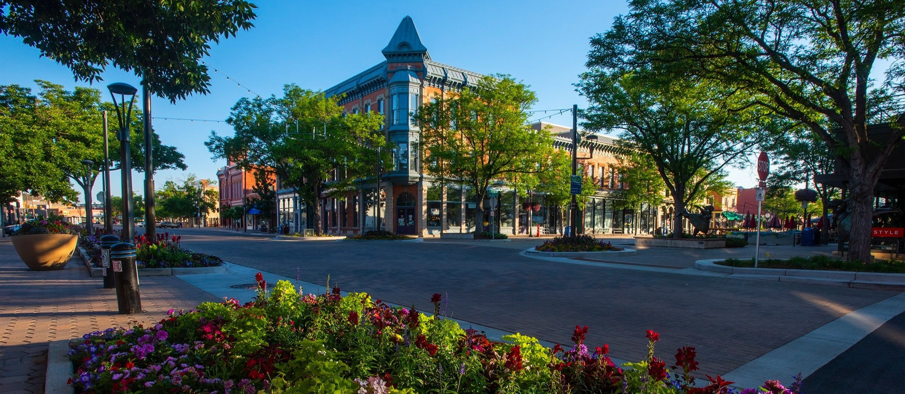

Fort Collins
City Overview
Fort Collins, Colorado is a city in the northern part of the state first founded as a military fort in 1864 (Fort Collins facts || visitor 1996). The biggest driver of people to the city is that it is home to Colorado State University, making Fort Collins a big college town. Thousands of students will come to Fort Collins each year to call it home while they attend CSU, which has been one of the driving factors of tourism to the city since the school was founded in 1870. With a population of 169,810 people (Bureau, Fort Collins City, Colorado 2022), a decent portion of that are attendees of the University. While CSU takes a large part of the spotlight for Fort Collins, the city also provides a great picture of the northern Colorado lifestyle. A great mix of rural and suburban life, any lover of the outdoors would find a great home in Fort Collins.
Source: fc.gov
Source: United States Census Bureau
Region and Economy
Fort Collins is located in northern Colorado, which is in the northern front range and high plains area, making Fort Collins a great mix of rural and suburban living. When moving away from the city center, the city quickly gives way to large open areas and farmland. Although somewhat lower than the state's average income of $89,302 (Bureau, State of Colorado 2022), the average income for those living in Fort Collins is still $80,227 (Bureau, Fort Collins City, Colorado 2022), attributed to the wide agricultural industry in the city and especially the well-established beer industry.
Source: fc.gov
Tourism and Activities
Being one of the most prolific brewery cities in the United States, Fort Collins is a haven for those who love to enjoy beer. Of the many breweries in the city, New Belgium is the most famous and wide-reaching brand, and it comes from Fort Collins. Tours of the brewery continue to bring people here year after year and cemented Fort Collins as one of the great beer cities in the country (Pomranz, These cities have the most breweries per capita 2019). Horsetooth Reservoir is also just outside the city and meshes well with the easygoing lifestyle experienced in Fort Collins. Horsetooth is a large six-and-a-half-mile reservoir that acts as one of the prime recreational areas for those living in the city (County, Horsetooth Reservoir ()). The reservoir is a great place to experience great hiking trails or go out on a boat and partake in water-based activities. The reservoir is nested in a large valley and is a picturesque embodiment of the mountains that Coloradoans call home. The old town area of Fort Collins is home to lots of great dining opportunities, many of which are continued opportunities to see the way that beer culture has shaped the dining scene here.
Source: food & wine
Source: New Belgium
Source: larimer.gov